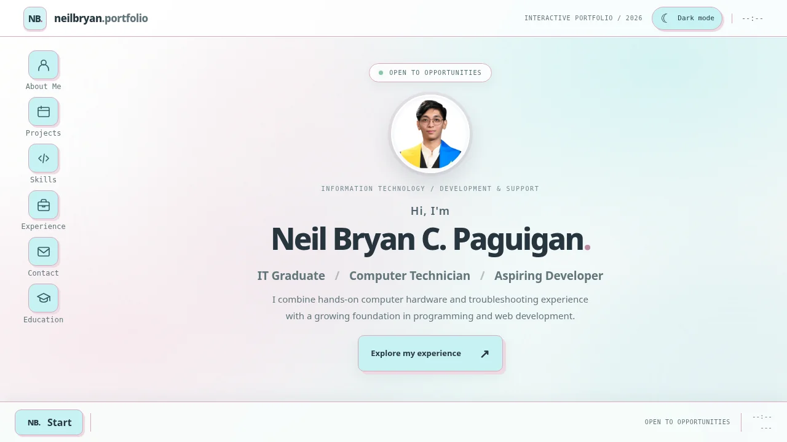
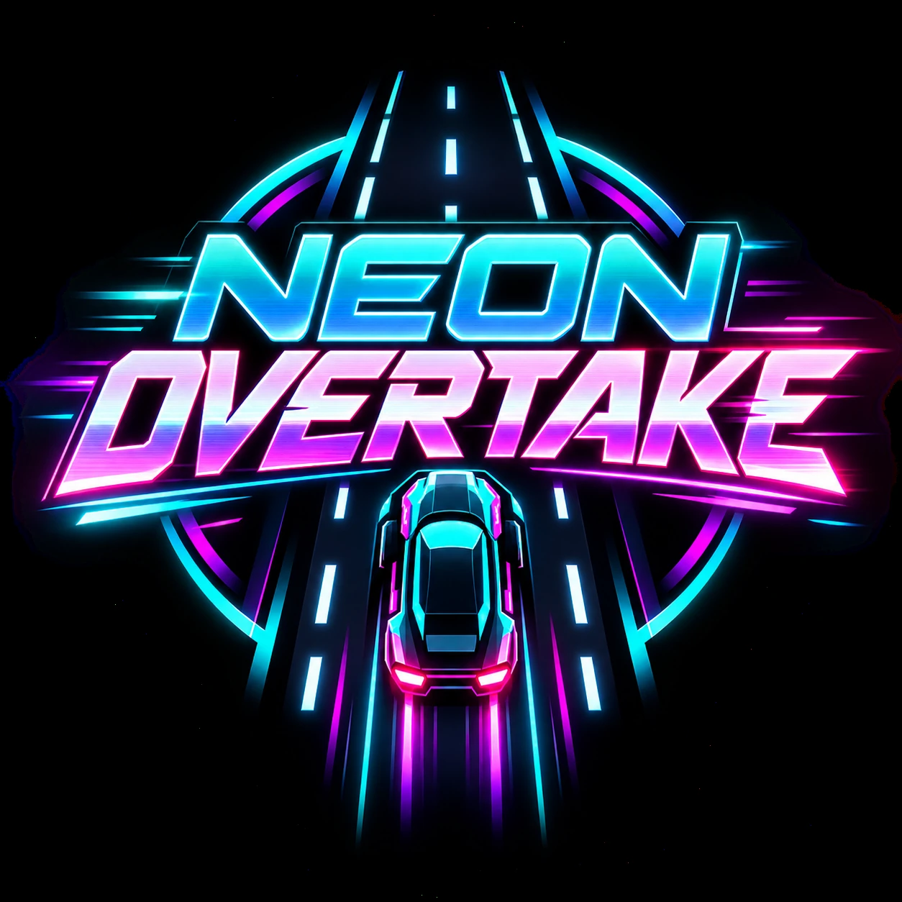

Computer Systems & Support
PC building, component troubleshooting, system diagnostics, OS installation, and technical customer assistance.
Welcome to my portfolio
IT Graduate Computer Technician Aspiring Developer
Combining practical computer systems experience with a growing foundation in software development and a commitment to continuous learning.
01 / About Me
I'm an Information Technology graduate with experience in technical support, PC systems, and creative digital work.
I graduated with a Bachelor of Science in Information Technology from STI College San Jose Del Monte. My work as a Computer Technician has strengthened my problem-solving skills through computer assembly, diagnostics, operating system installation, and customer assistance.
I also completed an internship in video editing at Hooli Software. Alongside my hardware background, I continue to develop my programming and web development skills through personal projects.
02 / Areas of Expertise
A balance of technical support, programming fundamentals, and creative production.
PC building, component troubleshooting, system diagnostics, OS installation, and technical customer assistance.
HTML, CSS, JavaScript, and foundational knowledge of Python and C#, strengthened through personal practice.
Short-form video editing, lyric videos, photo editing, and workplace communication.
03 / Experience
Roles that strengthened my technical knowledge, attention to detail, and approach to solving everyday problems.
PC Bulacan Computer Center · San Jose del Monte, Bulacan
Hooli Software · On-the-Job Training
04 / Selected Work
A selection of development, technical, and multimedia projects.

A previous desktop-inspired portfolio featuring interactive windows, shortcut navigation, and responsive layouts.
You are HereReels and lyric video samples edited during my internship, with two published YouTube examples.
View sample videos
A lightweight vertical highway arcade game featuring random traffic, overtakes, and increasing difficulty.
View project details05 / Education
STI College San Jose Del Monte
Dean's Lister, 2022
Senior High School
Earlier secondary education
06 / Contact
I'm interested in opportunities to contribute my technical background, learn from experienced teams, and grow in an IT or software-related role.